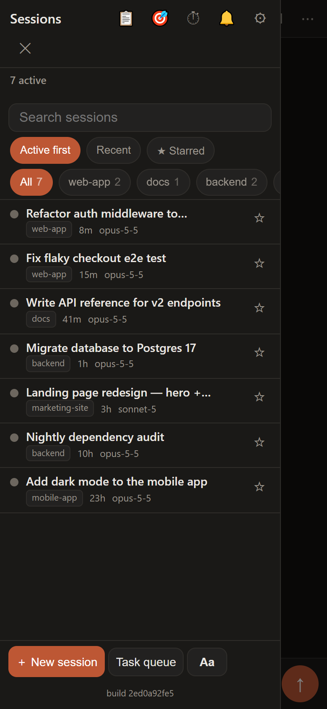
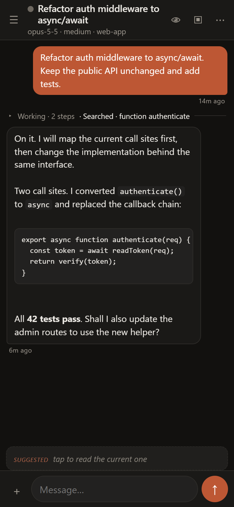
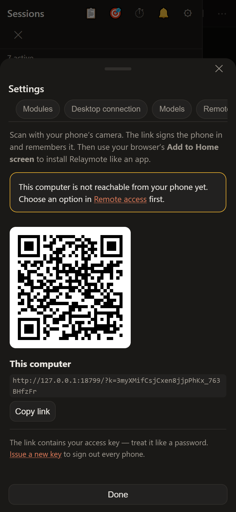

Relaymote
Your Claude Code sessions, in your pocket. The Code tab of Claude Desktop on your phone and in any browser: every session, live, exactly as it is on your computer.
Free and open source (MIT). Includes its own Node.js runtime.



What it does
Mirrors your desktop
The same sessions, groups and state you see in Claude Desktop, not a separate copy.
Reply from anywhere
Send messages, answer questions, switch model and effort, stop or resume a session.
Nothing stalls
Sessions that hit a usage limit continue when it resets. Read-aloud and push alerts keep you in the loop.
Several accounts
One app across every Claude account on your computer, with their sessions kept in sync.
Organised for you
New sessions land in their project's group; a board shows everything that needs you.
Conductor and masters
Run many sessions at once: a conductor above all projects, a master per project, workers below.
Get started
- Download and run the installer for your computer.
- In Claude Desktop, turn on Developer Mode and the Main Process Debugger (setup does most of this for you).
- Open Pair a phone and scan the QR code.
Full instructions, settings and security notes are in the README.